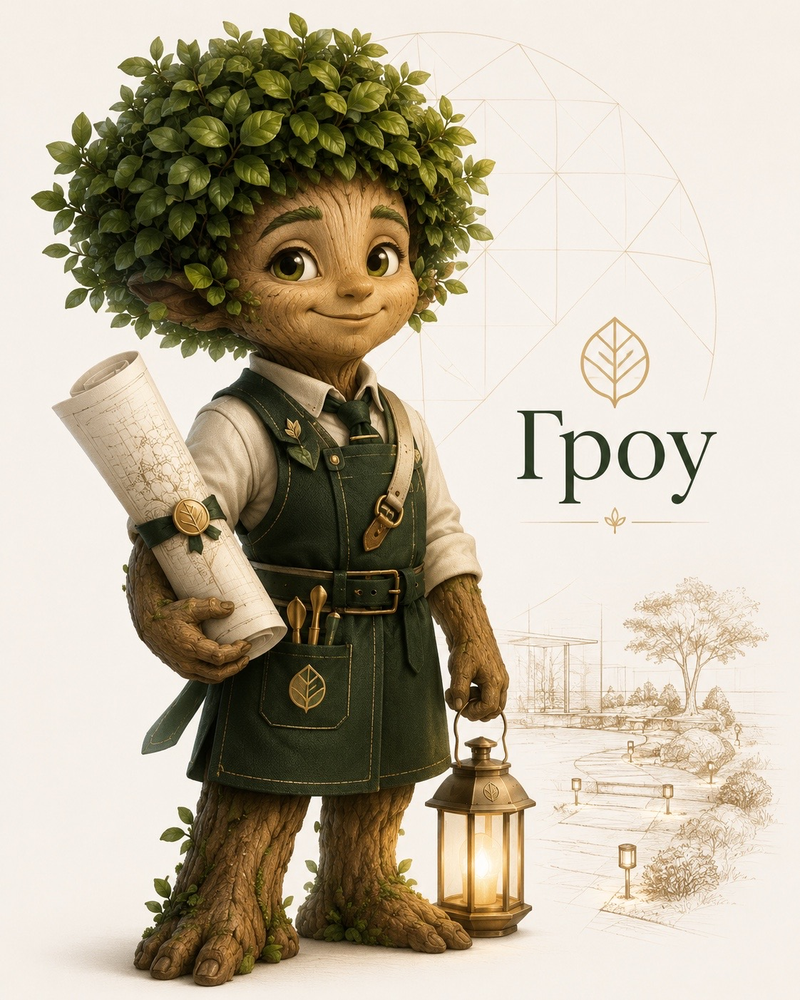

Как я собрал себе ИИ-ассистента — и он постепенно заменил мне отдел аналитики.

Меня постоянно о чём-то спрашивали: сколько лидов за неделю, что по сделке с тем клиентом, сколько ушло на рекламу. И каждый раз — одно и то же: открыть Bitrix24, найти отчёт, провалиться в него, посчитать.
На телефоне это просто невозможно — мобильный Битрикс почти ничего не показывает, а полную версию на маленьком экране не откроешь. На компьютере можно, но долго: десятки кликов ради одной цифры.
Я ловил себя на мысли: трачу время не на решения,
а на то, чтобы откопать данные для решений.
Я хотел просто спросить — и сразу получить картину бизнеса. Как с человеком, который держит всю компанию в голове и всегда на связи.
В фильмах у героя есть Джарвис: спросил — он ответил, подсказал, обратил внимание на важное. Я подумал — а почему у бизнеса не может быть такого же? Не дашборд. Не ещё одна программа. Собеседник.
Бизнесу нужны разные взгляды: маркетолог смотрит на трафик, РОП — на воронку и менеджеров, финдиректор — на деньги, аналитик — на цифры в целом. Держать всех в штате дорого. А что, если собрать их в одном ассистенте — один чат, а за ним команда специалистов?
Я дал ассистенту имя и лицо. Гроу — от Growzone и от слова «расти». Дерево: спокойное, надёжное, своё.
Это не безликий чат-бот, а персонаж с характером — внимательный, доброжелательный, профессиональный. С ним и работать приятнее, и команде он понятнее.
Начал с малого — пара вопросов к CRM. Заработало — захотелось больше. Добавил аналитику. Потом разбор звонков. Потом финансы.
Гроу растёт вместе с задачами.
Каждую неделю я что-то докручиваю — и он становится сильнее.
Это не «проект, который закончили». Это сотрудник, который учится. И, в отличие от человека, ничего не забывает.
С этого всё и затевалось. Я спрашиваю обычными словами — и Гроу сам идёт в CRM, считает и отвечает за секунды.
Гроу разбирает продажи глубже стандартного отчёта: конверсия, причины отказов, активность каждого менеджера — поимённо.
До этого я дошёл не сразу. Гроу не ждёт вопроса — он сам, раз в неделю, присылает сводку: где именно бизнес теряет деньги.
Когда я впервые это запустил, он показал почти 18 миллионов рублей в сделках, где замер сделан, а продажа просто зависла. Эти деньги лежали в CRM и тихо уходили.
Раньше записи звонков просто копились — слушать их было некому. Теперь Гроу делает это сам: скачивает запись, расшифровывает разговор и оценивает его.
Я вижу не «было 40 звонков», а что именно в них происходило.
Гроу подключён к Яндекс.Метрике и Avito. Он показывает, откуда приходят лиды, какой канал реально приносит продажи, а какой просто ест деньги.
Яндекс.Директ — на подходе, ждём доступ к API.
Гроу видит управленческую отчётность. Я могу спросить про прибыль, про статьи расходов, сравнить месяцы — и он ответит языком финансиста, а не выгрузкой цифр.
Получился ассистент, который смотрит на бизнес со всех сторон сразу.
Никто в команде не учился им пользоваться. Просто открываешь чат и пишешь вопрос — Гроу понимает живой язык, а не команды.
Гроу живёт в Telegram, которым все и так пользуются. Внутри он связывает CRM, телефонию и аналитику в одно целое.
К CRM у него доступ только на чтение — он ничего не меняет. Читает, считает и подсказывает.
Я перестал зависеть от того, у кого есть время залезть в Битрикс. И стало видно то, что раньше терялось.
Гроу не продаёт за меня. Он просто не даёт упустить то, что мы уже заработали.
Я до сих пор его докручиваю — почти каждую неделю. Впереди реактивация потерянных клиентов, связка звонков с воронкой, новые роли.
Это был эксперимент, который окупился. И если идея откликается — такого ассистента можно вырастить под любой бизнес, где есть CRM, звонки и менеджеры.
Спасибо, что выслушали мою историю.